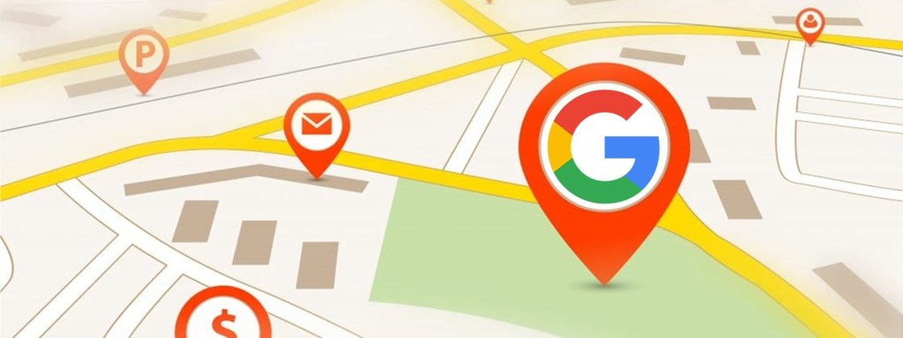

Locais de Atendimentos: Físicos, online, domiciliar, gratuitos e pago.
Atendimentos Físicos em São Paulo
Clinicas Disponíveis:
- Grupo Posture Saúde Corporativa - Telefone para contato: (11) 2628-8949
- Psicológica Durval Marcondes (Clínica-Escola do IPUSP) - Telefone para contato: (11) 3091-8248
- Núcleo de-stress - Telefone para contato: (11) 93800-6896
- Acolher Atendimento Psicológico e Qualidade de Vida - Telefone para contato: (11) 97607-0356
Atendimentos Online:
- Clinica Sanlis: https://www.clinicasanlis.com.br/
- Site Vittude: https://www.vittude.com/
- Site Telavita: https://www.telavita.com.br/
- Site Psicologia Viva: https://www.psicologiaviva.com.br/
- Instagram Pleno Psique: https://www.instagram.com/plenopsique/
- Instagram Psicologia de Apoio: https://www.instagram.com/psicologiadeapoio/
Atendimentos Domiciliares ou Home Care:
- Site/Clinica Pronto Care: https://www.prontocare.com.br/amp/
- Site/Clinica Home Angels: https://www.homeangels.com.br/>
Atendimentos graitutos:
- Atendimento Psicológico gratuito ou preço popular Paróquia São Luís Gonzaga - Av. Paulista, 2378 3231-5954 Quintas, das 10h às 19h. Oferece atendimentos em até 12 sessões, gratuitas ou a preço simbólico.
- Clínica de Psicologia da Universidade Cruzeiro do Sul – Núcleo de Estudo e Atendimento Psicológico (NEAP). Atendimento psicológico gratuito Rua Galvão Bueno, 724 2297-4442 Segunda a sexta, das 13h30 às 20h30. Sábados, das 8h30 às 12h30.
- IP USP INSTITUTO DE PSICOLOGIA DA USP Serviço de Aconselhamento Psicológico (SAP) - Avenida Professor Mello de Morais, 1721 - Bloco D - Butantã 3091-5015 Atendimento em esquema plantão. De 2ª a 6ª, das 7h às 19h. Sábados das 8h às 13h.
- PUC-Campinas - O acolhimento acontece por Skype, às terças-feiras, das 14h às 18h, às quartas e quintas, das 8h às 12h, e às sextas, das 17h às 21h, exceto em feriados. O contato no Skype é plantaopsicopuccampinas@gmail.com">, e mais informações podem ser consultadas pelos telefones (19) 97166-5474 e (19) 3343-6846.
- UNINOVE: Endereço: Rua Vergueiro, 235, Liberdade Telefone: (11) 2633-9000
- Universidade Cruzeiro Do Sul (UNICSUL) - Endereço: Campus São Miguel. Rua Taiuvinha, 26 Telefone: (11) 2037-5853
- Cínica De Psicologia FMU - Endereço: Avenida Santo Amaro, 1239 – Vila Nova Conceição Telefone: (11) 3040-3400 ou (11) 3040-3400 ramal 2316
- Centro de Assistência em Transtornos do Espectro Obsessivo Compulsivo (CENTOC) - Endereço: Rua Botucatu, 416 – Vila Clementino Telefone: (11) 5549-4374
- Universidade Paulista (Unip) - A Universidade Paulista (Unip) conta com os Centros de Psicologia Aplicada (CPAs), que oferecem gratuitamente seis modalidades atendimento psicológico a crianças, adolescentes, adultos, famílias e casais, que necessitem da avaliação psicológica e do tratamento de transtornos comportamentais, emocionais, e de distúrbios afetivos, relacionais e de conduta. Para informações de cada unidade, acesse o "https://www.unip.br/presencial/universidade/clinicas/cpa.aspx "